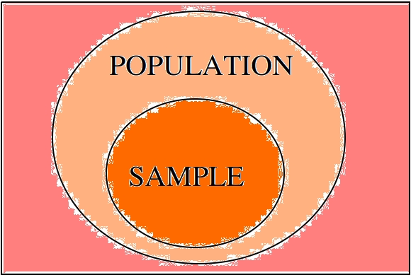

Introduction#
Statistics is the study of making general assertions from particular cases.
Motivation#
What is science? A rough definition of science might go: “Science is a rational process used for deciding which propositions are true and which propositions are false.”
What this definition doesn’t say is what the “decision process” for sorting propositions into true or false looks like. That is where statistics comes in. Statistics is the study of this decision process; it is a way of understanding what we mean when we say something is true or something is false. Statistics is the study of how we do science, and since it is the study of science, it is also the study of decision-making.
Our lives are filled with decisions. Life is, in some sense, nothing but a series of decisions. So, because we do it so often, we have a pretty good of idea of what we mean by “deciding” or “making a decision”. Every decision we make, we take into account the uncertainty in the various outcomes that might result, factor in their respective likelihood and then decide what course of action is the best. We know there is always a chance of the unexpected occuring anytime we take an action in the world and that our decisions are not always correct.
Writers and philosophers have, throughout the ages, summarized this idea much more eloquently than the current author, so let’s hear what they have to say on the matter,
That’s all very enlightening, but it amounts to saying: there is always uncertainty in any assertion we make about the world around us. Our “devices might be overthrown” or “go oft awry”.
In statistics, we are interested in how to quantity this uncertainty. Once we have quantified and measured it, rather than waxing poetical about its effervescence, we want to use that information to allow us to make the most informed decision we can possibly make.
Before we can make these notions precise, we need to define some terms. On this page, we will define the general notions of statistics and give a brief overview of its ideas and concepts.
Definitions#
Experiment#
An experiment is the quintessential foundation of statistics. By its universal nature, its definition is a bit hard to pin down; an experiment in statistics is an elementary concept, yet still multifaceted in its simplicity.
The primary characteristic of an experiment is its randomness. Put another way, an experiment is an event with an uncertain outcome. It is the task of statistics to tell us how much of the uncertainty in an experiment’s outcome is due to lack of information and how much is due to random error.
But an experiment is more than just randomness; an experiment also denotes an organized and controlled event being measured by human observers. An experiment is meant to exhibit some property of the natural world being studied. The phenomenon in question is isolated from all external effects, so that the only variables influencing the outcome of the experiment are the ones being measured.
All of this is done so that humans (us) may learn the relationships that govern empirical quantities. We, as inquisitive beings inhabiting an existence apart from us, naturally objectify and quantify the world around us; we turn it into relations of space and time, mass and motion, temperature and pressure; we categorize it into genus and species, into maps and contours, into recognizable patterns. All of this is done so we may see the lines of interaction that connect concepts. The experiment is conducted to help us draw these lines.
However, the uncertainty of the experimental outcome prevents, on a fundamental level, a direct line from being drawn from outcome to explanation. There is never certainty the observed outcome is due to explanatory power of a relationship with another observed variable, or if the outcome is due to random chance.
For this reason, when we conduct experiments, the best we can do is make an assumption about the state of the universe and then make observations. If the observations made contradict the assumption we started with, then we should like to conclude the assumption is false and discard it from the corpus of knowledge. It is also the task of statistics to help us decide whether the evidence gathered from observations is sufficient and statistically signficant enough to draw the inference desired: that we should reject the prior assumption due to evidence found to the contrary.
Individual#
- Definition
A single observation.
Individuals will mean different things depending on the experiment being conducted.
If we are measuring how hot it is over the course of a week in the summer, then the individuals in the experiment will be the temperature measurements made on a thermometer. The units of each individual observation will be degrees Kelvin (or degrees celsius or degrees fahrenheit, depending on the scale of the unit).
Note
Degress Kelvin is the standard unit for temperature the fields of physics, chemistry and biology.
If we are measuring what percent of the country’s population supports a certain government policy, then the individuals in the experiment will be the people sampled. The unit of each individual observation would be the binary units, Y or N, that represent the possible outcomes of answers, “Yes” or “No”
Population#
- Definition
The population is the set of all possible individuals that can be observed in a given experiment.
Sample#
- Definition
A sample is a subset of individuals drawn from the population in a given experiment.
Population vs. Sample#
The relationship between the population and the sample can be visualized with the following venn diagram.
The sample is contained in the population; it is the portion of the population we actually observe. The sample is the information we have available to us to draw conclusions about the population.
Note
We will study venn diagrams in more detail in later chapters.
Methods of Observation#
In statistics, “observation” is the name of the game. Without first making observations, there is nothing else to be done. There are several different ways and techniques of making observations.
- Conducting Census
A census is a type of statistical study where each individual in the population is observed.
In practice, we are never able to see entire population at once. A census is an ideal, like a vacuum or a frictionless surface. If we had infinite time and resources, we should always like to conduct a census, rather than drawing a sample, because it would tell us conclusively how the population looked.
A census is conducted every ten years in the United States to accurately measure the population size. Even a massive and organized operation like this is likely to miss more than a few individuals in the population, whether due to undocumented citizens, errors in record-keeping or pure happenstance. The point being, a census is the ideal study, but impossible to obtain.
Warning
A census may also refer to the entire population itself, rather than the method of observing the population. The use should always be clear from context.
- Drawing A Sample
A sample is a type of statistical study where a subset of the population is observed at random.
When a sample is drawn from a population, we say, “the population has been sampled” or that we are “sampling the population”.
Because we are not able to conduct a census whenever we want, we have to make do with a sample. It is usually the case the sample is much, much smaller than the actual population. For this reason, it is very important the sample is random and representative of the population.
We need a random sample because we do not want the data to have any features in it (e.g., patterns) that would obscure the population we are trying to observe.
At the same time, we need a representative sample because we do not want the data to give a false impression of the population we are trying to observe.
Often, these two goals are at odds with one another. In order to make a sample representative, you must impose some sort of order on the way you sample the population, but doing so then affects the randomness of the sample. Finding the right balance between these two directives is the topic of the next section.
Sampling Techniques#
Random#
- Definition
A random sample is selected from a population without any pre-determined method.
Examples
Mixing names in a hat and picking three names without looking.
Going through the phone book and flipping a coin to determine who to include in the sample and who to exclude.
Assign every name a number and then draw random numbers.
The last item in the list above is the most common technique in practice. A standard method in statistics for generating a random sample from a population is to associate an index to each individual. Consider the following table of names,
Index |
Individual |
1 |
Jean-Paul Sartre |
2 |
Martin Heidegger |
3 |
Edmund Husserl |
4 |
Bertrand Russell |
5 |
Kurt Godel |
6 |
Gottlob Frege |
7 |
Immanuel Kant |
8 |
Rene Descarates |
9 |
Ludwig Wittgenstein |
10 |
Alain Badiou |
Once each individual in the population is associated with an index, random numbers are generated; the indices that are selected by the random number generator then tell us what individuals to select for the sample. For example, the random number generator might output 3, 6, and 10; from this, we would then construct a sample of individuals: Edmund Husserl, Gottlob Frege, Alain Badiou.
Systematic#
- Definition
A systematic sample is selected from a population according to some fixed rule.
- Examples
Asking every 10 th person who enters a building if they are voting in the next election.
Selecting ten people from every zipcode.
Sending out surveys and using every 5 th one that is returned.
Stratified#
- Definition
To get stratified samples, the population is broken up into mutually exclusive groups. Then a random sample from every group is taken.
- Example
Sampling a highschool by grouping the school into freshmen, sophomores, juniors and seniors.
Separating the population by political affiliation and then drawing a sample from each group.
Mailing surveys to 100 randomly selected residents of each state.
The different groups of a stratified sample as sometimes known as strata.
Stratified samples are easily visualized with a table. As an example, suppose in the first example, we were sampling a population of highschool students to determine for whom they were voting in the student government elections.
Candidate 1 |
Candidate 2 |
Other |
|
Freshmen |
25 |
45 |
2 |
Sophomores |
30 |
33 |
5 |
Juniors |
15 |
27 |
1 |
Seniors |
23 |
21 |
2 |
These tables will pop up in a later chapter under the name Probability Tables.
Cluster#
- Defintion
To get a clustered sample, the population is broken up into random groups and then each group is randomly sampled.
- Example
Looking at a map of a city and breaking it into grid of squares. Then, selecting a few squares and drawing a sample from each selected square.
Surveying people entering supermarkets across a city.
Looking at the employees of the top three local banks by revenue to determine the average salary of a bank employee.
It is easy to confuse the method of cluster sampling with the method of stratified sampling. They seem to be saying the exact same thing at first glance, but upon closer inspection, there are subtle, but important differences.